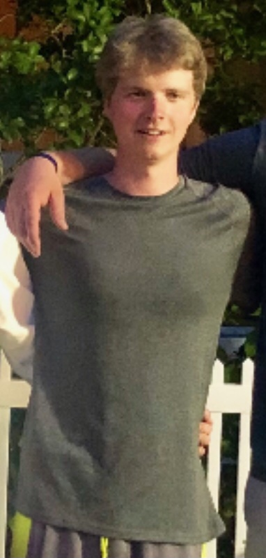

Sam Draddy
Journalism Student

Journalism student looking for work experience
Experience
KOA Sports Camp Counselor
- Oversaw and instructed campers in a variety of sports and activities while ensuring a safe and fun environment.
- Worked collaboratively with other counselors and parents of campers in maximizing the overall learning experience for the campers.
- Provided advice, guidance and support to the campers to improve and advance their skill levels and confidence.
California Tortilla, Inc., Manager
- Work part-time during school years and full-time during summer 2017.
- Started handling register duties and customer payments, greeting customers, preparing foods prior to opening and cleaning restaurant post-close.
- Promoted to Store Manager in September 2018 and oversaw cooks and other employees, interacted with customers, ensured store was operating in an efficient and professional manner.
Franklin Knolls Pool, Front Desk and Snack Shack Manager
- Managed front desk employees while checking member credentials, greeting members and guests.
- Assisted in managing pool snack shack, scheduling employees, purchasing food for shack, handling food and snack monetary transactions, greeting customers while also opening and closing shack.
Uber Eats
- Deliver meals from a variety of restaurants to residences throughout Montgomery County and Prince George’s County, MD.
- ncome received from delivery service supplements cost of education, room and board and books at University of Maryland.
Education
The University of Maryland, College Park
- Major: Journalism
- Expected graduation: May 2022
Skills
- Media: Twitter, Instagram, Facebook
- Computer: Windows, Mac, Microsoft Word, Excel, PowerPoint